Haja Center (하자센터) is a creative hub in Yeongdeungpo dedicated to empowering young people through "learning by doing." Founded in 1999 as a collaboration between the Seoul Metropolitan Government and Yonsei University, the center serves as a collaborative space for young people to explore filmmaking, music, design, and community building through hands-on projects.
With a name derived from the Korean word haja (meaning "let's do it"), the center supports self-initiated projects and craftsmanship, aiming to help young people navigate their own paths and foster a sustainable creative ecosystem within the city.
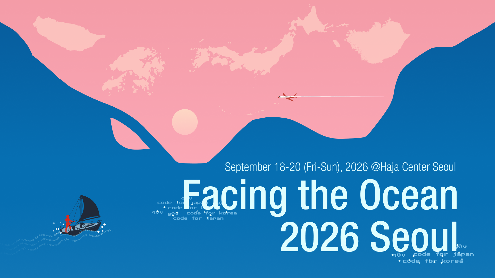
Photos
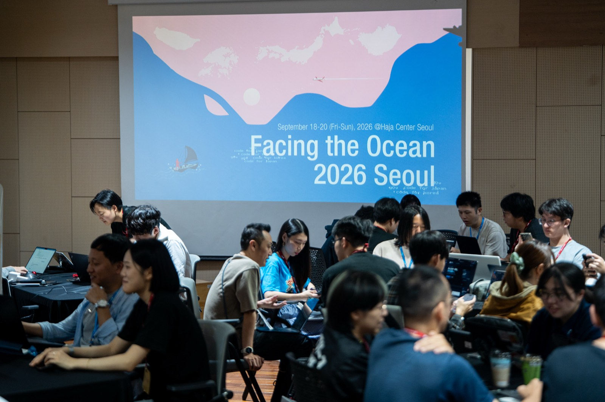
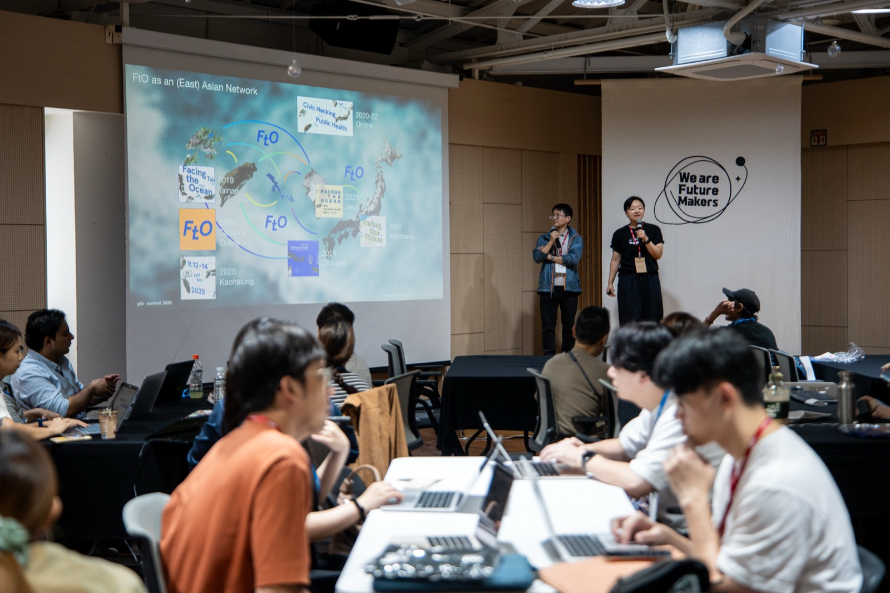
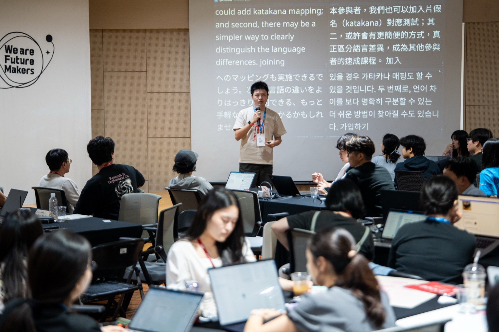
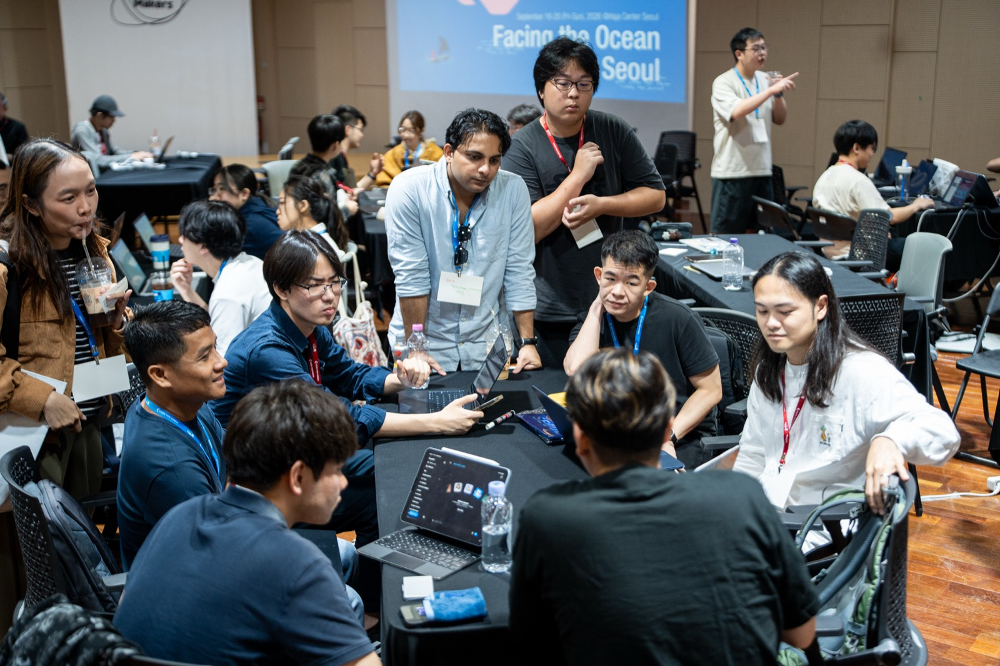
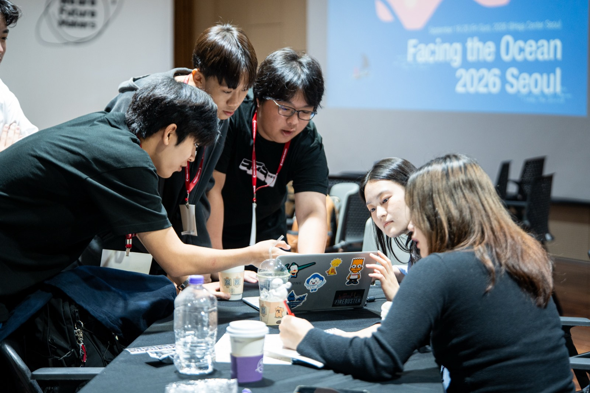
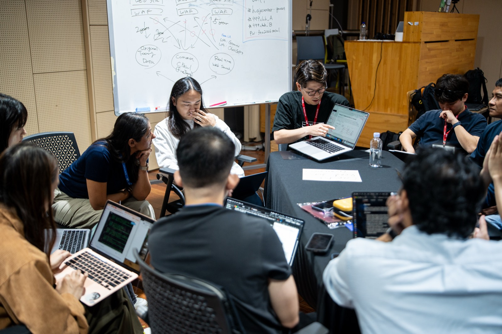
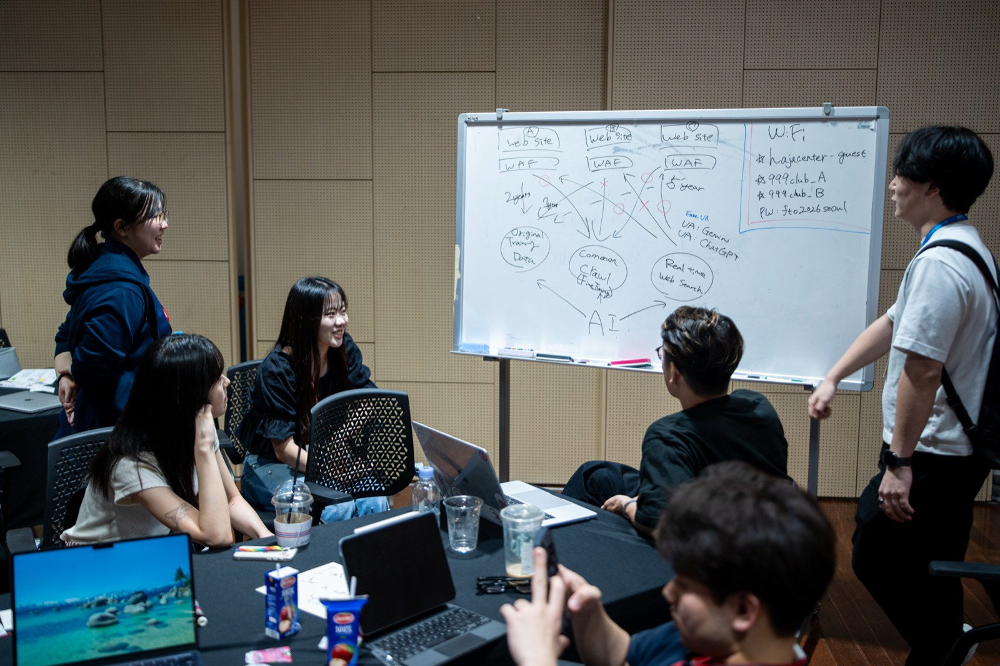
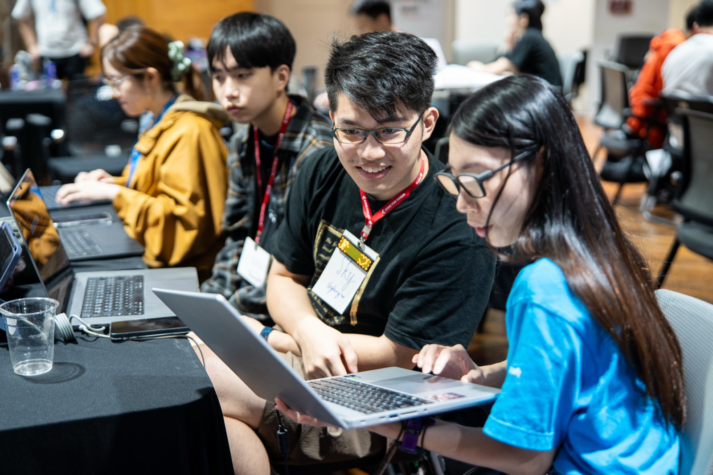
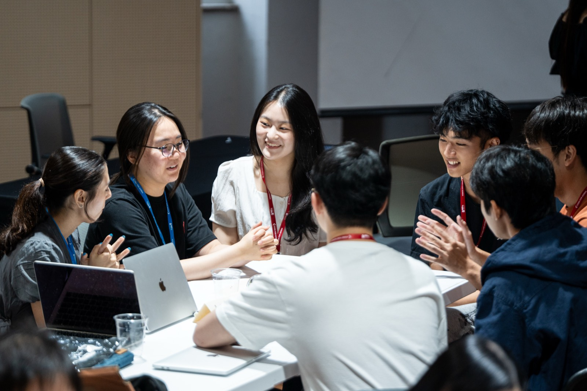
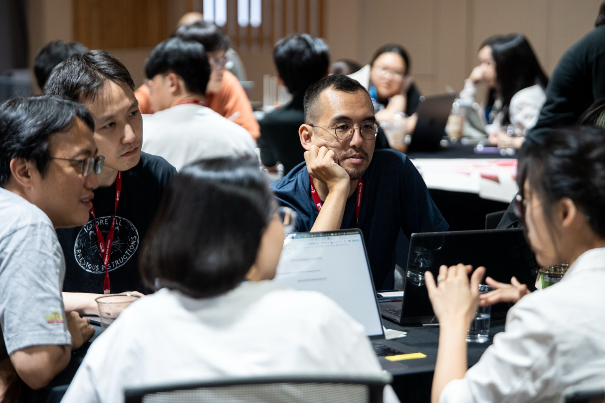
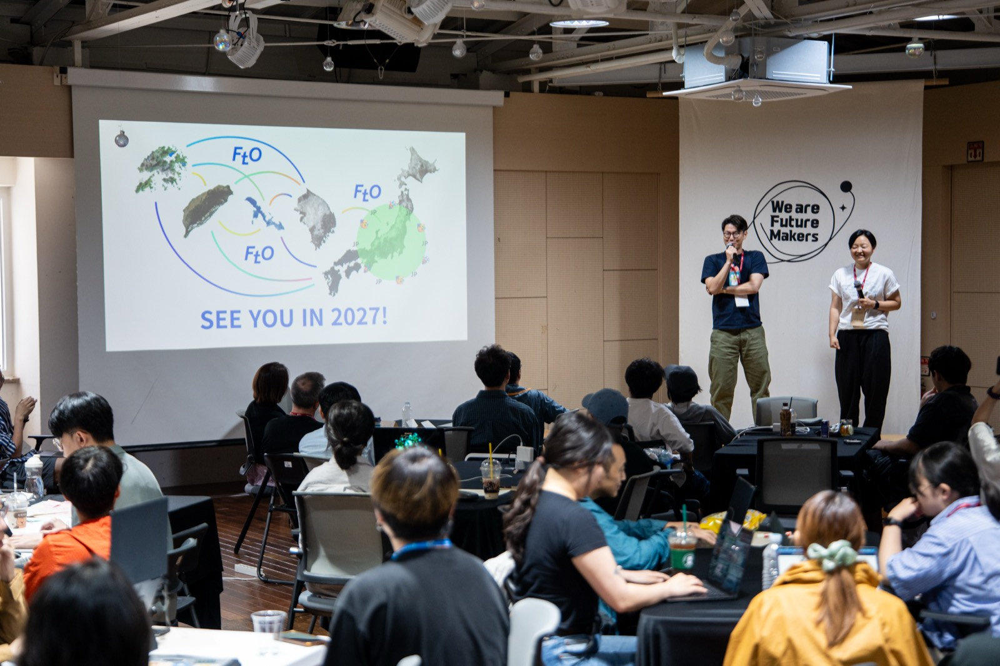
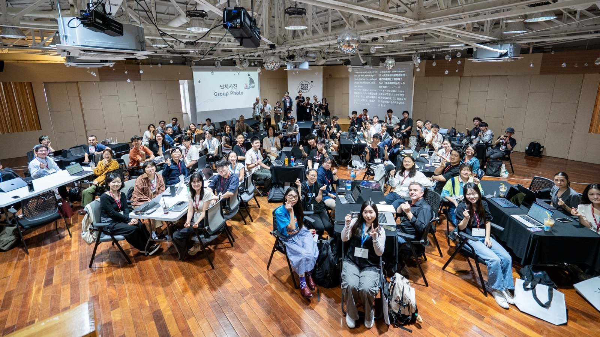
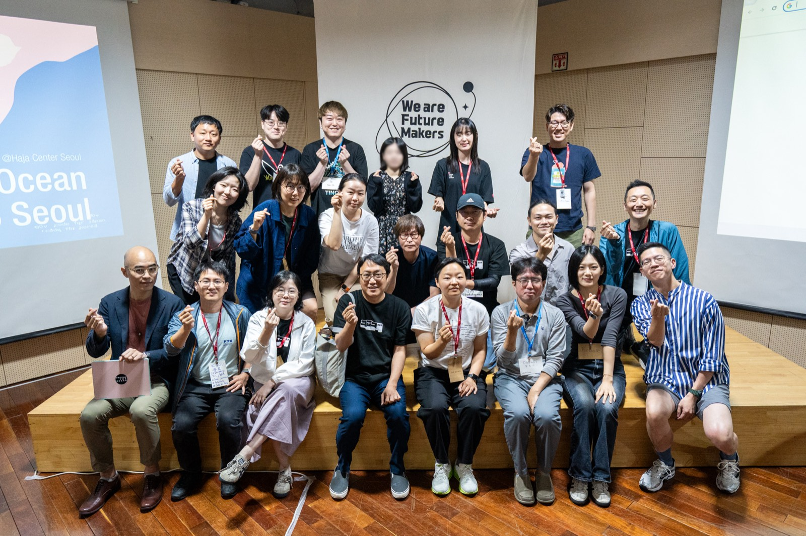
Projects
Twenty projects were pitched and hacked on over the weekend — from disaster information and kiosk accessibility to AI governance and cross-border research.
Pitched by Aideliin Call
Pitched by Irvin
Pitched by Achim
Pitched by WiseLiving
Pitched by Yuki
Pitched by Sky
Pitched by Rebane
Pitched by RSChiang
Pitched by Seohyeon / Alex
Pitched by KLOU
Pitched by Parti
Pitched by Sumie
Pitched by Fluidto
Pitched by Michael
Pitched by Oiwan
Pitched by Jason
Pitched by Lee Jongchan
Pitched by Pomin
Pitched by Litsuka
Pitched by Yoru